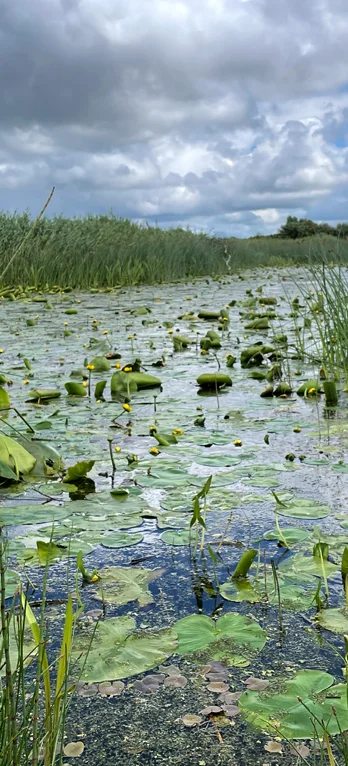

Supporting Global Conservation
Cornafulla Micro Reserve contributes to wider European and international conservation efforts through local monitoring, research and community participation. Our work across Cornafulla Bog and the Shannon Callows connects with the Natura 2000 network of protected habitats and species, and with international monitoring programmes such as the International Swan Census. By contributing local observations and knowledge to wider conservation efforts, we help build understanding of these connected landscapes and the wildlife they support.